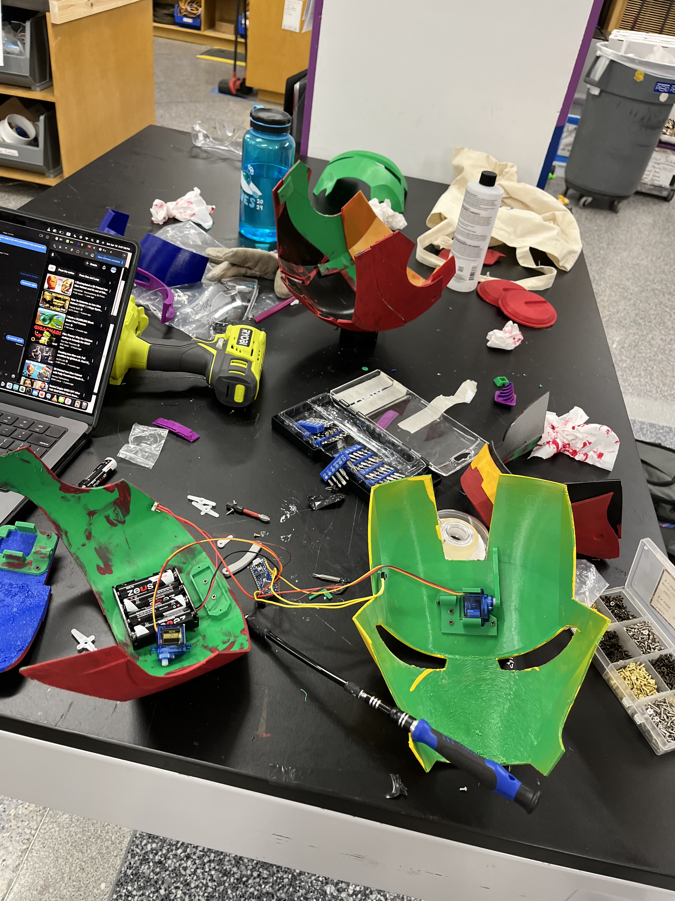
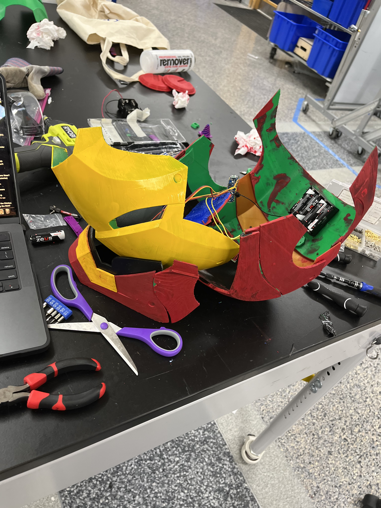
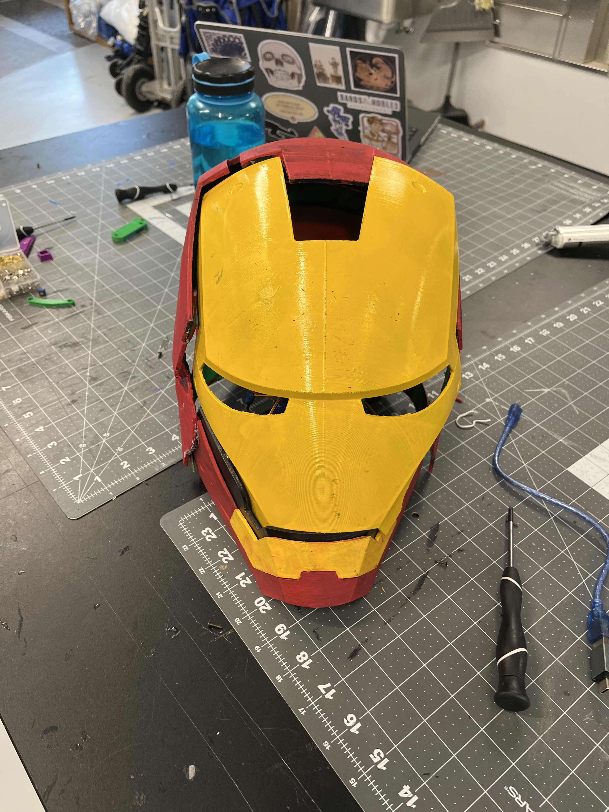

3D-printed assembly
Printed helmet components were aligned and assembled using screws and JB Weld.
Project 06
A functional 3D-printed Iron Man mask with an Arduino Nano and servo-actuated faceplate.

This project combined 3D printing, mechanical assembly, electronics, and embedded control to create a wearable Iron Man mask with a moving faceplate. The printed components were joined using screws for the mechanical connections and JB Weld where a permanent bond was needed.
Printed helmet components were aligned and assembled using screws and JB Weld.
Servos provide the motion needed to raise and lower the faceplate.
A compact microcontroller coordinates the servo movement in response to a button press.


Getting the mask to operate consistently required repeated code adjustments. I tuned the servo positions and movement timing until the faceplate opened and closed reliably without forcing the mechanism beyond its intended range. This process connected the physical behavior of the printed assembly directly to changes in the Arduino control code.
Two short demonstrations show the completed mask and servo-actuated faceplate in operation.